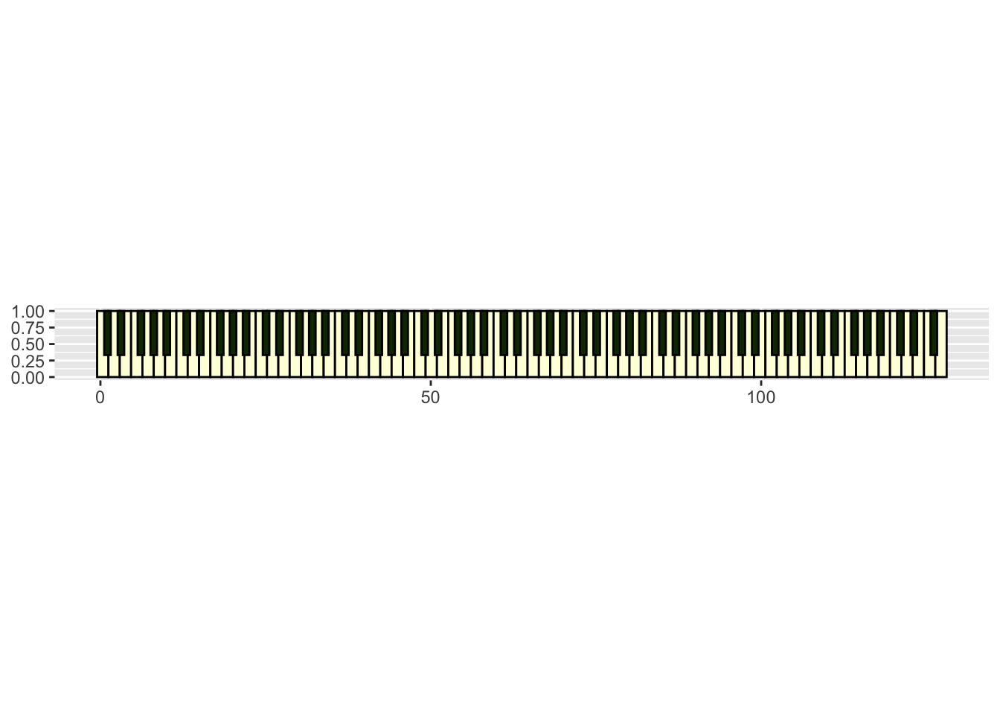

Trying out a few R packages to handle MIDI data in dataframes, and play it with fluid synth.
Author
Matt Crump
Published
January 30, 2024
Show the code
from diffusers import DiffusionPipelinefrom transformers import set_seedfrom PIL import Imageimport torchimport randomimport sslimport osssl._create_default_https_context = ssl._create_unverified_context#locate library#model_id = "./stable-diffusion-v1-5"model_id ="dreamshaper-xl-turbo"pipeline = DiffusionPipeline.from_pretrained( pretrained_model_name_or_path ="../../../../bigFiles/huggingface/dreamshaper-xl-turbo/")pipeline = pipeline.to("mps")# Recommended if your computer has < 64 GB of RAMpipeline.enable_attention_slicing("max")prompt ="computer music. musical computer. music represented as bits going into the fabric of the universe. 80s cartoon retro."for s inrange(30):for n in [5,10]: seed = s+21 num_steps = n+1 set_seed(seed) image = pipeline(prompt,height =1024,width =1024,num_images_per_prompt =1,num_inference_steps=num_steps) image_name ="images/synth_{}_{}.jpeg" image_save = image.images[0].save(image_name.format(seed,num_steps))
computer music. musical computer. music represented as bits going into the fabric of the universe. 80s cartoon retro. - Dreamshaper v7
I’m going to be running a cognition experiment or two this semester that will involve creating musical stimuli. I would like programmatic control over that, so I’m delighted to learn that there are existing R packages that will help me with a few things.
I’m just testing a few things out here, which means this page will be a loose collection of notes and scraps of code.
Reading in MIDI with pyramidi
It looks like I can read in MIDI data to a dataframe with pyramidi.
Requires some python stuff, but it is working. Kudos to Urs Wilke for developing pyramidi! It uses R6, which I don’t use very often.
This all took way longer than I expected. Mostly fiddling with python packages and paths to things. But, I declare victory because it made the Top Gun theme song into an mp3.
Very happy that it is possible to import, manipulate, and render midi files using R as a central command language. Although I have been messing with midi stuff for since the 80s, I have not tried to programmatically mess with it, or dug into midi file convention and structure.
I have some work ahead if I want to compose “computer music” with R. That would be fun though. I would probably glitch out until everything descends into modem sounds. Actually, I’m secretly extremely excited about some possibilities that I’ve wanted to explore.
Anyway, below is scraps of code trying out various things and making notes to my future self.
Writing some random notes
I’ve only got 30 minutes right now, can I make this thing randomize notes?
Strategy: Read the pyramidi docs, borrow some code from there, and try to play some random notes.
# load system midi file to startmidi_file_string <-system.file("extdata", "test_midi_file.mid", package ="pyramidi")mfr <- MidiFramer$new(midi_file_string)# set some timing paramsn_beats <-16ticks_per_beat <-960L# construct a tibbledrum <-tibble(i_track =0,meta =FALSE,# This is just a repetition of a classical rock beat:note =rep(c(36, 38), n_beats /2),channel =9,i_note =1:n_beats,velocity_note_on =100,velocity_note_off =0,b_note_on =0:(n_beats -1),b_note_off = b_note_on +1/2,)# helper functionbeats_to_ticks <-function(notes_wide) { notes_wide %>%mutate(ticks_note_on = b_note_on * ticks_per_beat,ticks_note_off = b_note_off * ticks_per_beat )}# pass the tibble back to the midi dfmfr$update_notes_wide(beats_to_ticks(drum))mfr$mf$write_file("testagain.mid")# do pyramidi stuff to get the tibble back into the format it needs to bedf_notes_long <-pivot_long_notes(mfr$df_notes_wide)df_midi_out <-merge_midi_frames(mfr$df_meta, mfr$df_notes_long, mfr$df_not_notes)dfc2 <- df_midi_out %>% miditapyr$nest_midi(repair_reticulate_conversion =TRUE)# write the midi file to diskmiditapyr$write_midi(dfc2, ticks_per_beat, "test_drums.mid")# synthesize midi file to wav with fluid synthsystem("fluidsynth -F test_drums.wav ~/Library/Audio/Sounds/Banks/FluidR3_GM.sf2 'test_drums.mid'")# convert wav to mp3av::av_audio_convert("test_drums.wav","test_drums.mp3")
Got the hihats, changed the tempo. I’m missing something about timing, the resulting wav file is playing with silence at the end, and that seems wrong. Need to tinker some more.
# clean up and delete wavif(file.exists(wav_name)){file.remove(wav_name)}
[1] TRUE
This works sort of. MIDI fried my brain here. For some reason the file has extra bars of silence, can’t figure out why right now. I’m missing something here about how midi time works.
loaded better in musescore.
musescore shows two bars, but it plays through 4 bars…not sure what is going on.
library(ggplot2)piano_keys_coordinates %>%# plot white keys first that they don't cover half of the black keys: dplyr::arrange(layer) %>%ggplot(aes(ymin = ymin,ymax = ymax,xmin = xmin,xmax = xmax,fill =factor(layer) )) +geom_rect(color ="black", show.legend =FALSE) +scale_fill_manual(values =c("#ffffdd", "#113300")) +coord_fixed(ratio =10)

Let’s try plotting a chord, C7. Cool!
Show the code
# get midi notes from table look upnote_numbers <- midi_defs %>%filter(note_name %in%c("C4","E4","G4","Bb4") ==TRUE) %>%pull(note)# plotpiano_keys_coordinates %>%# make black keys 3rd order for printingmutate(layer =case_when(layer ==2~3, layer ==1~1)) %>%# set played keys to layer 2mutate(layer =case_when(midi %in% note_numbers ==TRUE~2, midi %in% note_numbers ==FALSE~ layer)) %>%# plot white keys first that they don't cover half of the black keys: dplyr::arrange(layer) %>%ggplot(aes(ymin = ymin,ymax = ymax,xmin = xmin,xmax = xmax,fill =factor(layer) )) +geom_rect(color ="black", show.legend =FALSE) +scale_fill_manual(values =c("#ffffdd", "pink","#113300")) +coord_fixed(ratio =10)
I made a 1 bar drum loop in ableton, using the clip view. Apparently this kind of midi file does not contain the meta set_tempo message…
Show the code
#import midi using miditapyrtest_midi <- pyramidi::miditapyr$MidiFrames("ableton.mid")#import using midomido_import <- pyramidi::mido$MidiFile("ableton.mid")# to R dataframedfc <- pyramidi::miditapyr$frame_midi(mido_import)ticks_per_beat <- mido_import$ticks_per_beat# unnest the dataframedf <- pyramidi::miditapyr$unnest_midi(dfc)# add set_tempo message# missing from ableton midi clipdf <- df %>%mutate(tempo =NaN) %>%add_row(i_track =0,time =0,meta =TRUE,type ="set_tempo",tempo =500000,.before =2 )
Before I go on, I need to do some timing tests to make sure I understand a few things.
The beat is 1 bar. There are 4 beats per bar. The hi hats are in 16th notes, and there are 16 hi hats. The tempo is set to 120. What happens if I play with the time column.
Show the code
# reload dfdf <- pyramidi::miditapyr$unnest_midi(dfc)# add set_tempo message# missing from ableton midi clipdf <- df %>%mutate(tempo =NaN) %>%add_row(i_track =0,time =0,meta =TRUE,type ="set_tempo",tempo =500000,.before =2 )# futz with the time column# behaves as expected, yah!df <- df %>%mutate(time = time/2)# update dftest_midi$midi_frame_unnested$update_unnested_mf(df)# write midi filetest_midi$write_file("ableton2.mid")
The pyramidi package has a tab_measures() function that adds additional timing information, for later use in composition and modification.
Show the code
# add more time infodfm <-tab_measures(df = df, ticks_per_beat = ticks_per_beat)